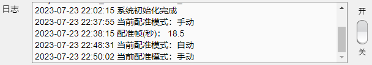
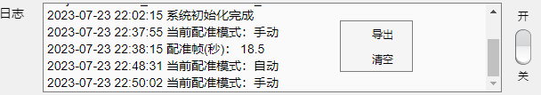
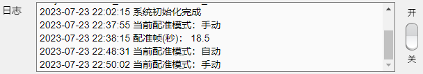
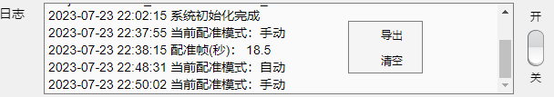

5.1 日志
  日志面板用于记录程序运行步骤，便于查找误操作及应用调试与优化。关闭日志开关将停止写入日志，默认开启。 在日志中右键单击弹出右键菜单，允许导出或清空日志。 注：日志文件保存位置为MATLAB userpath 文件夹。
 
日志面板用于记录程序运行步骤，便于查找误操作及应用调试与优化。关闭日志开关将停止写入日志，默认开启。
在日志中右键单击弹出右键菜单，允许导出或清空日志。
注：日志文件保存位置为MATLAB userpath 文件夹。